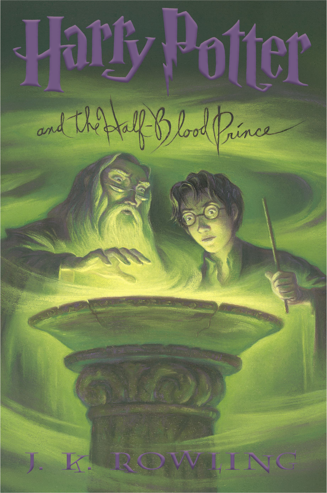

Harry Potter and the Half-Blood Prince (Book 6)
Synopsis
The war against Voldemort is not going well; even Muggle governments are noticing. Ron scans the obituary pages of the Daily Prophet, looking for familiar names. Dumbledore is absent from Hogwarts for long stretches of time, and the Order of the Phoenix has already suffered losses. And yet… As in all wars, life goes on. Sixth-year students learn to Apparate — and lose a few eyebrows in the process. The Weasley twins expand their business. Teenagers flirt and fight and fall in love. Classes are never straightforward, though Harry receives some extraordinary help from the mysterious Half-Blood Prince. So it’s the home front that takes center stage in the multilayered sixth installment of the story of Harry Potter. Here at Hogwarts, Harry will search for the full and complex story of the boy who became Lord Voldemort — and thereby find what may be his only vulnerability.
Download PDF- Chapter 01 - The Other Minister
- Chapter 02 - Spinner's End
- Chapter 03 - Will and Won't
- Chapter 04 - Horace Slughorn
- Chapter 05 - An Excess of Phlegm
- Chapter 06 - Draco's Detour
- Chapter 07 - The Slug Club
- Chapter 08 - Snape Victorious
- Chapter 09 - The Half-Blood Prince
- Chapter 10 - The House of Gaunt
- Chapter 11 - Hermione's Helping Hand
- Chapter 12 - Silver and Opals
- Chapter 13 - The Secret Riddle
- Chapter 14 - Felix Felicis
- Chapter 15 - The Unbreakable Vow
- Chapter 16 - A Very Frosty Christmas
- Chapter 17 - A Sluggish Memory
- Chapter 18 - Birthday Surprises
- Chapter 19 - Elf Tails
- Chapter 20 - Lord Voldemort's Request
- Chapter 21 - The Unknowable Room
- Chapter 22 - After the Burial
- Chapter 23 - Horcruxes
- Chapter 24 - Sectumsempra
- Chapter 25 - The Seer Overheard
- Chapter 26 - The Cave
- Chapter 27 - The Lightning-Struck Tower
- Chapter 28 - Flight of the Prince
- Chapter 29 - The Phoenix Lament
- Chapter 30 - The White Tomb